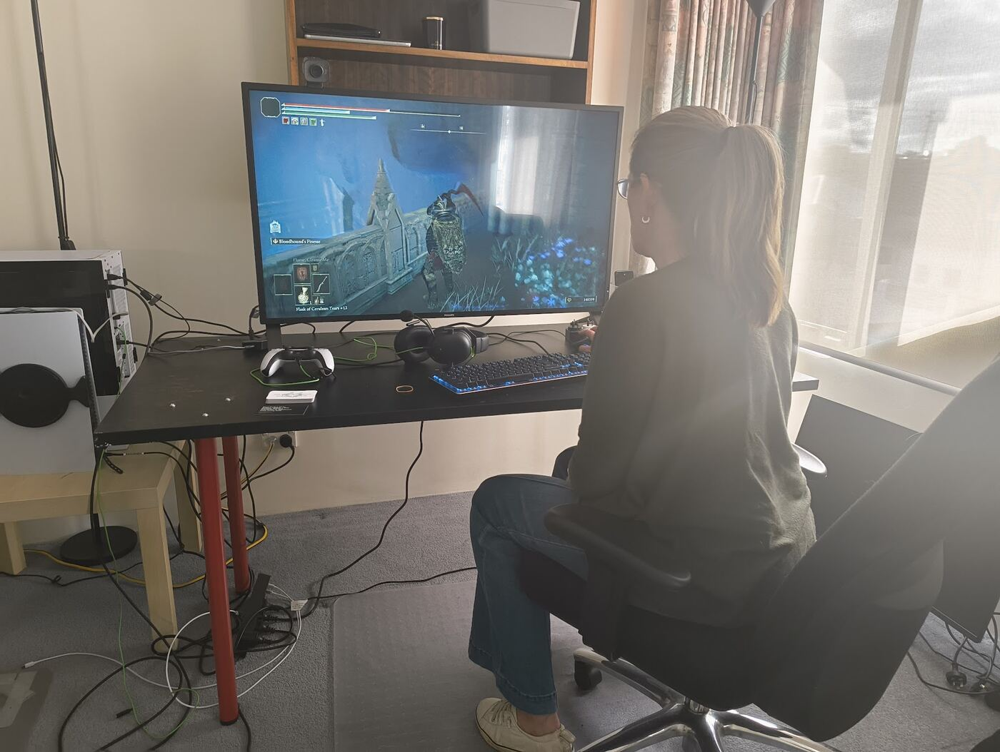
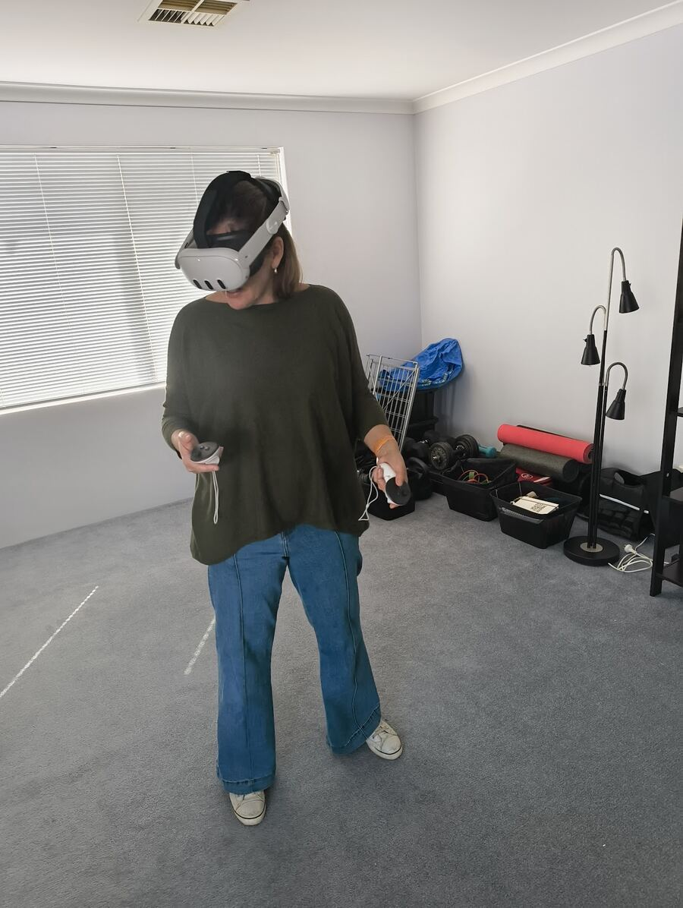

Late-diagnosed women
ADHD, autism, or both, recognised in adulthood. You're re-reading your whole life with new eyes, and working out what to keep, what to drop and what to finally stop apologising for.
Occupational therapy for late-diagnosed women living with chronic, invisible conditions, and with the guilt of not performing the way you used to. We work on the gap, from your own couch.
Maybe you got your diagnosis at 38, or 47, or last month. Maybe the tests are finally done and you have a name for what your body's been doing. Either way, you're left with the same question: now what?
ADHD, autism, or both, recognised in adulthood. You're re-reading your whole life with new eyes, and working out what to keep, what to drop and what to finally stop apologising for.
You look fine. You are not fine. The medical side has been investigated; what's left is the day-to-day: pacing, energy, flare days, and living a life you actually want around it.
There's a gap between where you expect to be performing and where you actually are. The guilt that lives in that gap is exhausting on its own.
Hormones shifting, roles changing, kids growing up, parents getting older. Strategies that used to work suddenly don't, and nobody warned you.
Neurodivergent, parenting, working, and trying to be fully present for all of it at once. (Spoiler: nobody can.)
In one column is what you expect of yourself. In the other is what your brain and body actually have today. The guilt lives in the gap.
We don't close that gap by trying harder. We close it by deciding, on purpose, what gets set down for now, so the things that matter get your full attention instead of a sliver of it.
Go on, tick off a few. Notice how it feels. ↘
Tap anything you could put down for today.
Real, finite and enough for a few things.
Your GP and specialists do the medical work, and they matter. But a diagnosis doesn't tell you how to get through a Tuesday. That part is occupational therapy: everyday life, rebuilt around how you actually work.
Start with a welcome chatYears of "you seem fine", pushing through and quietly falling apart afterwards.
GPs, specialists, referrals, waitlists. Eventually: a name for it.
Relief, grief, validation and frustration, sometimes all in the same afternoon.
Energy, routines, roles, boundaries, the guilt. Practical changes to your days and your environment, at a pace your body agrees to.
First, you'll be heard. Most women I work with have spent years explaining themselves to people who didn't quite believe them. Then we get practical, together, at your pace.
Divided attention means nobody gets the real you: not your work, not your people, not you. We design days where you do one thing at a time and do it properly.
one block, one roleEvery unfinished thing leaves a little residue in your head. We find the loops that are quietly draining you and close them, park them or let them go.
less noise, more youWillpower runs out, especially on a flare day. Instead we ask: what change to your space, routine or calendar would make the next step happen on its own?
set it up once, lean on it dailyIt's hard to say no when you don't know what you're protecting. We get clear on that first. After that, boundaries stop feeling like guilt and start feeling like care.
no is a complete sentence

No driving across town on a low-energy day, no waiting rooms and no fluorescent lights. Just you, somewhere comfortable, and someone who's properly listening.
You don't need to have it all worked out before you get in touch. That's sort of the point.
A short video call to say hello, hear what's going on and check we're a good fit. You can ask anything.
15 min · no costWe map your week, find the open loops and agree on one or two things that would make the biggest difference.
Telehealth · 60 minWe test changes in real life, keep what works and drop what doesn't. Around six weeks in, we look back at how far you've come.
Ongoing · at your paceWe'll talk through what fits your situation in the welcome chat. You don't need a referral to get started.
For self-managed and plan-managed participants. I've worked with complex NDIS clients for years, so you won't need to explain the system to me.
No plan needed. Session fees: $___ per session. Some private health funds may offer a rebate. Check with yours.
Already working with a women's health or menopause GP? I'm happy to work alongside them so your care stays joined up. Medicare details TBC
Pick a time that suits you. It's a relaxed video call with no preparation and no pressure. If now isn't the right time, that's fine too.
Prefer to email? hello@example.com
No. Plenty of women come to me while they're still on a waitlist, mid-assessment, or quietly suspecting. We work with what's happening in your life, not just what's on paper.
For this kind of work, often better. You're in your real environment, which is exactly what we're working on, and you skip the energy cost of getting somewhere. If something needs to be in person, we'll talk about it.
OT is about everyday life: the routines, roles, environments and energy that make up your days. With me, that looks like untangling your week, building systems that don't depend on willpower, pacing around chronic illness, and working through the guilt that comes with doing less.
It happens, and it's expected. Rescheduling is simple. Cancellation policy: add details.
This part of my practice focuses on women, because late diagnosis and invisible illness often show up differently for them. I also offer broader NDIS occupational therapy. Ask in your welcome chat.